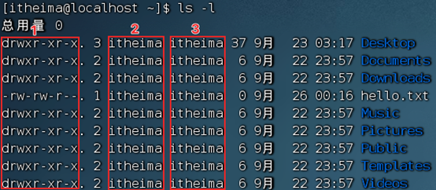
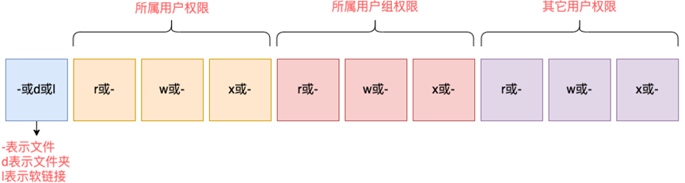
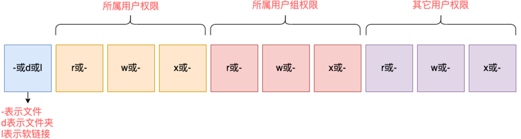

「Linux」用户操作
root用户
- su：切换账户
- 语法：
su [–] [用户名]- -：可选，表示是否在切换用户后加载环境变量，建议带上
- 用户名：表示要切换的用户，省略时表示切换到root
- 切换用户后，通过exit命令退回上一个用户，也可使用ctrl+d
- 语法：
- sudo：为普通命令授权，临时以root身份执行命令
- 语法：
sudo 其他命令 - 配置sudo认证
- 切换到root用户，执行visudo命令
- 在文件最后添加：zbx ALL=(ALL) NOPASSWD:ALL
- wq保存
- 切换回普通用户
- 语法：
用户、用户组管理
以下命令需root用户执行
- 用户组管理
- 创建用户组
- 语法：groupadd 用户组名
- 删除用户组
- 语法：groupdel 用户组名
- 创建用户组
- 用户管理
- 创建用户
- 语法：
useradd [-g -d] 用户名- -g：指定用户的组，不指定-g，会创建同名组并自动加入，指定-g需要组已经存在，如已存在同名组，必须使用-g
- -d：指定用户HOME路径，不指定，HOME目录默认在：/home/用户名
- 删除用户
- 语法：
userdel [-r] 用户名- -r：删除用户的HOME目录，不使用-r，删除用户时，HOME目录保留
- 语法：
- 查看用户所属组
- 语法：
id [用户名]
- 语法：
- 修改用户所属组
- 语法：usermod -aG 用户组 用户名
- 将指定用户加入指定用户组
- 语法：usermod -aG 用户组 用户名
- getent
- 查看系统全部用户信息
- 语法：getent passwd
- 显示的7份信息：用户名：密码（x）：用户ID：组ID：描述信息（无用）：HOME目录：执行终端（默认bush）
- 语法：getent passwd
- 查看系统全部组信息
- 语法：getent group
- 查看系统全部用户信息
- 语法：
- 创建用户
查看权限控制
- 通过ls -l 可以以列表形式查看内容，并显示权限细节
- 序号1：表示文件、文件夹的权限控制信息,权限细节共分为10个槽位
- r表示读权限
- w表示写权限
- x表示执行权限
- 序号2：表示文件、文件夹所属用户
- 序号3：表示文件、文件夹所属用户组
- 序号1：表示文件、文件夹的权限控制信息,权限细节共分为10个槽位
修改权限控制
- chmod：修改文件、文件夹权限信息
- 只有文件、文件夹的所属用户或root用户可以修改
- 语法：chomd [-R] 权限 文件或文件夹
- -R：对文件夹内的全部内容应用同样操作
- 示例：chomd u=rwx ,g=rx,o=x hello.txt
- u表示user所属用户权限，g表示group组用户权限，o表示other用户权限
- 快捷表示：chomd 751 hello.txt
- 权限的数字序号：r记为4，w记为2，x记为1
- 0 无任何权限：—
- 1 仅有x权限：–x
- 2 仅有w权限：-w-
- 3 有w和x权限：-wr
- 4 仅有r权限：r—
- 5 有r和x权限：r-x
- 6 有r和w权限：rw-
- 7 有全部权限：rwx
- chown：修改文件、文件夹的所属用户和用户组
- 此命令只适用与root用户执行
- 语法：
chown [-R] [用户] [:] [用户组]- -R：对文件夹内全部内容应用相同规则
- 用户：修改所属用户
- 用户组：修改所属用户组
:：用于分隔用户和用户组
本博客所有文章除特别声明外，均采用 CC BY-NC-SA 4.0 许可协议。转载请注明来自 南巷清风！
- wechat
- alipay
评论